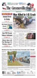

Brandon's Family Tree
Description
| Type | Value |
|---|---|
| Book/Periodical Name | The Greeneville Sun |
| Place | Greeneville, TN |
| Date | 6/9/2014 |
| Page | 1 |
| Author | Ken Little |
| Publication | The Greeneville Sun |
| Title | Man Killed in I-81 Crash |
Entries assigned to this source
| Persons |
|---|
 Corbin Lynn Begley Corbin Lynn Begley |
Text
| Corbin L. Begley, 22, of Kingsport, was killed early Sunday when the Nissan pickup he was driving, shown above, left Interstate 81, hit a guardrail and flipped. Begley, who wasn’t wearing a seatbelt, was ejected. Accident Happened Sunday Morning Near Mile Marker 23.5 A Kingsport man was killed in a one-vehicle crash about 3:20 a.m. Sunday on southbound Interstate 81, Trooper Jason Taylor, of the Ten- nessee Highway Patrol, said in a report. Corbin L. Begley, 22, was driving a 2008 Nis- san Frontier pickup truck in the left lane of southbound I-81 when the crash occurred, the report said. The truck left the lane and went into the right lane, continuing on to the shoulder of I-81, the report said. The truck struck a guardrail and over- turned, causing Begley to be ejected. He was not wearing a seat belt, the report said. A passenger, 33-year-old Rachel R. Carter, of Fall Branch, suffered injuries in the crash and wastakentoanareahos- pital by Wings Air Res- cue 2 helicopter. Carter’s condition was not available this morn- ing. Begley was pronounced dead at the scene. Seat belt use “would have made a difference,” Tay- lor’s report said. Among those respond- ing to the crash scene were members of the Mosheim Volunteer Fire Depart- ment, the Greeneville Emergency & Rescue Squad, and Greene Coun- ty-Greeneville Emergency Medical Service. The wreck happened near the 23.5 mile marker of I-81, said Harold Wil- liamson, Mosheim fire chief. The car “ended up on its side against some trees over an embankment,” Williamson said. Southbound I-81 was closed for more than an hour as members of the Greeneville Emergency & Rescue Squad and Mosheim firefighters worked to free Carter from the truck, William- son said. One lane of southbound I-81 was opened after the extrication was completed. The THP Critical Incident Response Team continued its on-scene investigation until about 7:30 a.m. Sun- daymorning. Both lanes of south- bound I-81 were reopened about 7:30 a.m. Sunday. |
Media

Greeneville Sun Newspaper 6:9:14